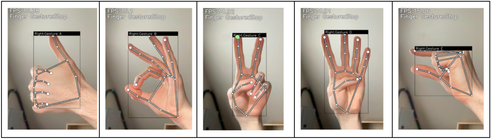

Gesture-Based AI 3D Modeling System
Creating a machine learning-based system to interpret hand gestures for 3D modeling using Computer Vision and 3D Processing, aiming to develop an intuitive and engaging user interface. Overseeing the Machine Learning development, training, and implementation to detect and classify numerous hand gestures. Prioritizing the robustness and reliability of the system.